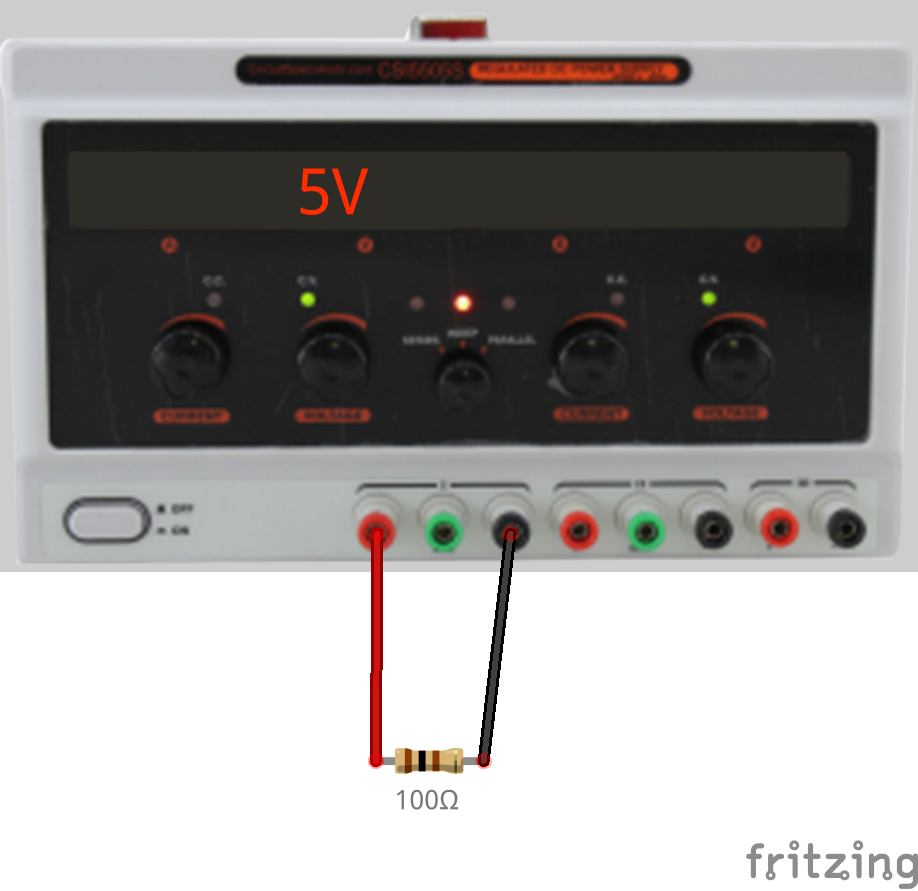
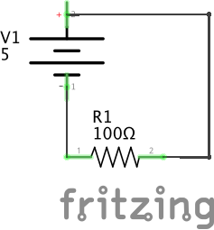

Exercise: Smoke a Resistor
Objective
Destroy a resistor to observe the effects of excessive dissipation.
Destroy a red LED to observe the non-linear current characteristic.
Resistors generate heat as current flows through them. If the applied
voltage rises too high, they will heat up until they smoke or melt. The
power dissipated is the voltage drop multiplied by the
current: P = V * i. Since the voltage drop
across a resistor is proportional to the current (V = i
* R), the power dissipated can also be expressed
as P = i2 * R or
P = V2 / R.
The small resistors we use in the lab are rated for 0.25 Watts of
dissipation. So for example, a 100 ohm resistor will dissipate 0.25 Watts
with an applied voltage of 5V: the current will be
50 mA (5V / 100 ohms), and the power will be
0.25 Watts (5V * 0.050 A). As the voltage
increases they will dissipate power according to the square of the
voltage, so they will get hotter and hotter and quickly fail.
Steps and observations
- Adjust the power supply for 5V output. Measure the resulting current
through a 100 ohm quarter-watt resistor.
- Check if the resistor is getting warm.
- Raise the power supply to 7V output, which will double the dissipated
energy to a half-Watt: P = V2 / R = 7*7 /
100 = 0.49W.
- Check if the resistor getting warm. Careful not to burn yourself.
- Continue raising the power voltage slowly until the resistor fails.
Note the final voltage and current.
- As noted in the previous LED exercise, LEDs have a non-linear
characteristic in which the current rapidly rises as the voltage climbs.
Find an inexpensive red LED and measure its forward voltage
using the diode measurement function on the DMM. For a red LED, this
will typically be in the vicinity of 1.6V.
- Set the power supply about half a volt below the forward voltage.
Attach the LED. Very slowly increase the applied voltage, observing the
LED. The light should get very bright very quickly around the forward
voltage, and at just a slightly higher voltage, the LED will heat up and
stop working permanently.
Comments
Resistors are cheap, so this is pretty harmless, even if it smells bad.
It is heartbreaking to overvoltage an expensive component and “let
out the magic smoke” so it stops working.


Other Files
- 1.a.i.10_smoke-a-resistor.fzz